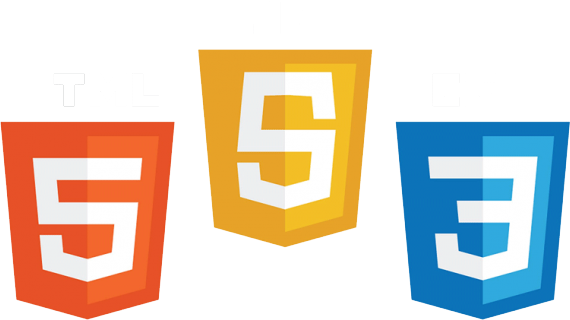

Sobre

Isaque Barbosa Martins, 19 anos
Técnico em Jogos digitais pelo IFRN e graduando em Tecnologia da informação pela UFRN
Programador
Iniciante em front-end com HTML e CSS
Conhecimento nas linguagens, C, C#, Java, JavaScript e Python
Conhecimento nas engines Construct e Unity

- 


Projetos
Jogos
-
The Last Human

Jogo desenvolvido para O trabalho de Conclusão de Curso do IFRN
-
Soul Archer

Jogo desenvolvido durante o primeiro semestre da matéria Motores de Jogos durante o IFRN
-
The Wizard

Jogo desenvolvido durante o segundo semestre da matéria Motores de Jogos durante o IFRN
-
Weather Gangs
Jogo desenvolvido durante o terceiro semestre da matéria Motores de Jogos durante o IFRN
-
ArteSaga
Jogo desenvolvido como projeto de extensão no IFRN